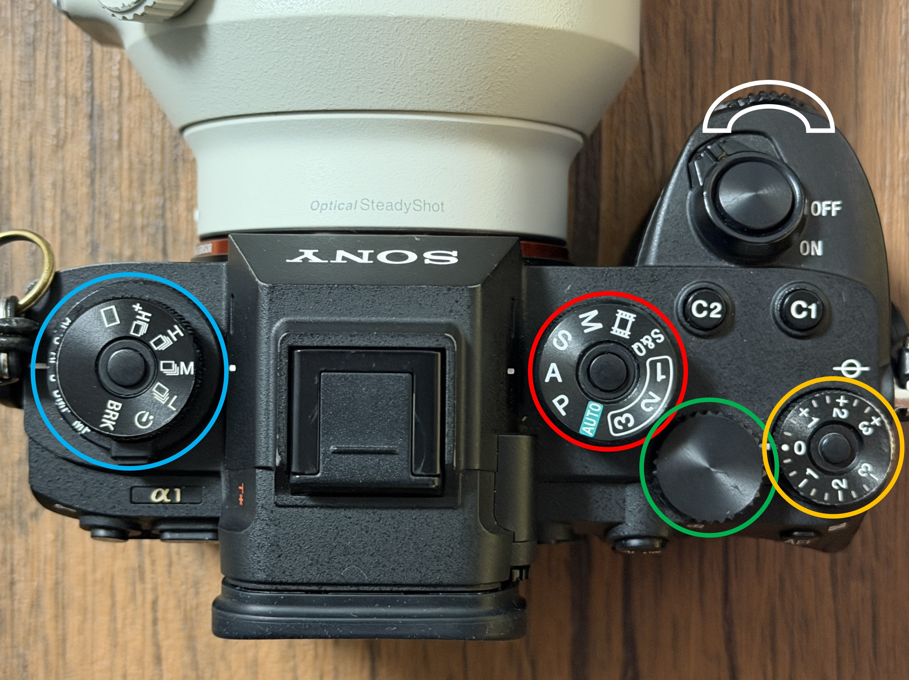
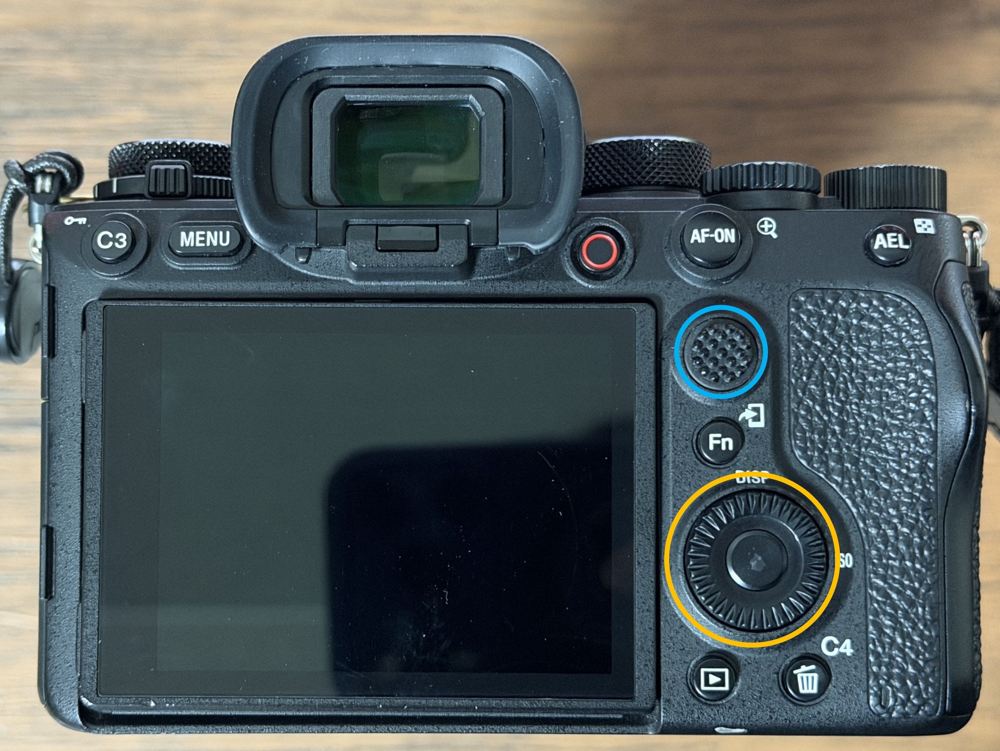

Chapter 1
ボタン割当
カスタムキーへの機能割り当てと、各ボタン・ダイヤルの役割一覧。
カスタムボタン（上面）

【ダイヤル】
【ボタン】
- 撮影モード切替(赤丸)
→ M(マニュアル)モードかS(シャッタースピード優先)モードを使用するのが
分かりやすいと思います。 - 露出補正(橙丸)
→ 基本は0で良いですが、ライブ撮影は黒つぶれが気になるかもなので、
少しプラス側に回しても良いと思います。 - 上段： 連射モード切替、下段： AFモード切替(青丸)
→ 上段は□～□M辺りに設定するのが良いと思います。
H・M・L付の□は連射速度が違い、□のみは単射です。
※手ブレ防止にはHかMに設定して、2・3枚ずつ連射するのもオススメです。 - F値変更(白丸)
→ F値(絞り値)を変更するためのダイヤルです。(M/A(絞り値優先)モード時有効) - シャッタースピード変更(緑丸)
→ SSを変更するためのダイヤルです。(M/Sモード時有効)
【ボタン】
- C1ボタン： サイレントモード切替
→ シャッター音のON/OFFを切り替えます。
※ON中は強制電子シャッターになるため、ローリング歪みが気になる場合はOFFにしてください。 - C2ボタン: 押す間AF/MF切替
→ 使用することはないと思います。
カスタムボタン（背面）

【ダイヤル】
【ボタン】
- ISO感度変更(橙丸)
→ ISO感度を変更するためのダイヤルです。
※本ダイヤルは上下左右のボタン入力が可能であり、
上： 押す間ダイヤル設定1
→ Shiftボタンのようなイメージです。使用することはないと思います。
下： タッチ操作切替
→ 背面モニタのタッチ操作ON/OFFの切り替えができます。
左： フォーカスエリア変更
→ AF対象の走査範囲設定を変更できます。
右： ピクチャープロファイル変更
→ 撮影時の色味変更ができます。
となっている。
【ボタン】
- ダイヤル中央ボタン: 決定ボタン(橙丸)
→ 何かしらの操作後の決定ボタンです。 - スティック： フォーカス位置操作、ボタン： ピント拡大(青丸)
→ スティック操作ではAF対象位置の操作、ボタン操作ではAF対象位置を拡大して表示ができます。 - MENUボタン: メニュー画面表示
→ メニュー画面に遷移します。 - C3ボタン： APS-C Super35mm/フルサイズ切替
→ APS-C Super35mmクロップのON/OFFを切り替えできます。基本的に使用する必要はないと思います。
※撮影時から1.5倍でトリミングできるボタンと思ってください。 - C4ボタン: グリッドON/OFF切替
→ 3x3分割のグリッド表示のON/OFFを切り替えできます。 - 〇ボタン: 瞳AF切替
→ 瞳AFのON/OFF切り替えができます。ONでいいと思います。 - AF-ONボタン: 再押しダイヤル設定2
→ Shiftボタンのようなイメージです。使用することはないと思います。 - AELボタン: 押す間AEL
→ 3値やAWBのAuto設定値を押してる間だけ固定できます。基本的に使用する必要はないと思います。 - Fnボタン: あああああ
→ あああああ - ▶ボタン: プレビュー画面表示
→ 撮影した画像の確認画面に遷移します。